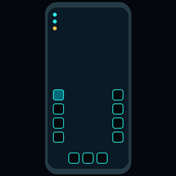
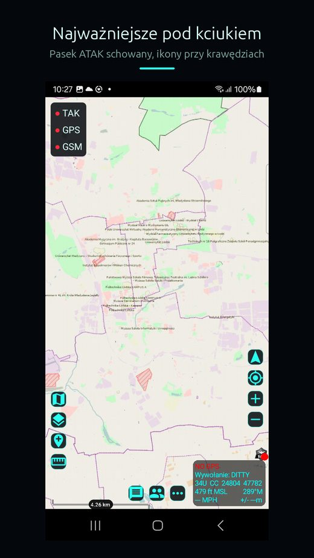
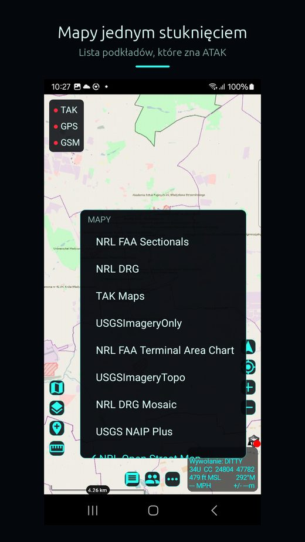
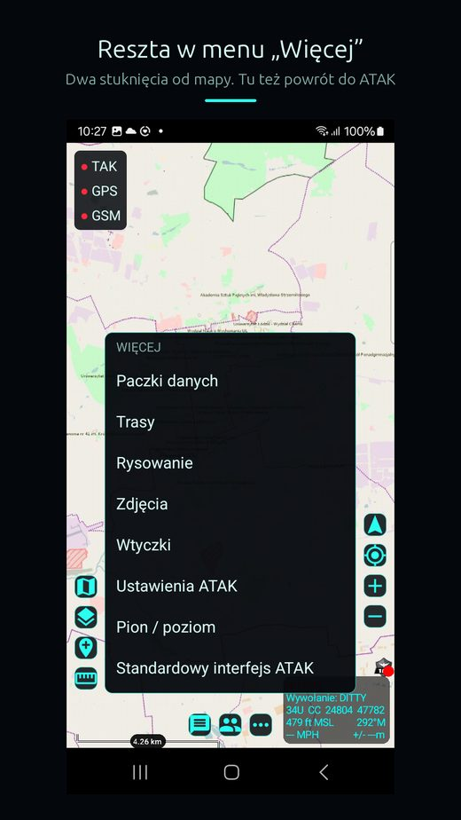

Test zamknięty w Google PlayModern UI
Wtyczka ATAK-CIV 5.5 i nowszych
Chowa pasek narzędzi ATAK-a i układa najczęściej używane funkcje przy krawędziach ekranu, w zasięgu kciuka. Telefon w pionie, jedną ręką.
Po co to jest
ATAK powstał na tablet trzymany poziomo. Na telefonie w pionie pasek narzędzi zasłania mapę, a ikony leżą poza zasięgiem kciuka.
Modern UI chowa ten pasek i stawia dwie kolumny ikon w dolnej połowie ekranu. Nie dodaje nowych funkcji. Każda ikona uruchamia to, co ATAK już potrafi.
Co widać na ekranie
- lewa kolumna: mapy, warstwy, postawienie punktu, pomiar odległości i kierunku,
- prawa kolumna: mapa 3D, obracanie mapy, kompas, własna pozycja, powiększenie i pomniejszenie,
- dolny rząd: czat, kontakty, menu „Więcej” i tryb „Tylko mapa”,
- ramka stanów: godzina oraz stan serwera TAK, GPS i sieci komórkowej, każdy w swoim kolorze.
Okna nad mapą
Okna ATAK-a, na przykład kontakty albo menedżer nakładek, pływają nad mapą. Da się je przesuwać, zmieniać ich rozmiar i chować do paska w rogu ekranu. Mapa zostaje pod nimi w pełnym rozmiarze.
Położenie i rozmiar każdego okna wtyczka pamięta osobno dla pionu i poziomu.
Własny pasek i motywy
W menu „Więcej” → „Dostosuj” wybierasz do sześciu narzędzi ATAK-a albo innych wtyczek i ustawiasz ich kolejność. Motyw określa kolor przewodni, tło i wielkość tekstu. Da się go zapisać do pliku i przenieść na inny telefon.
Czego się przy niej nauczyłem
Obrót ekranu z wtyczki działa tylko przez intencję ATAK-a, nie przez zapis ustawienia. Sam zapis zostawia okna po lewej stronie, a prawą połowę ekranu szarą. Tę wadę pokazał telefon, nie emulator.
Zrzuty ekranu


